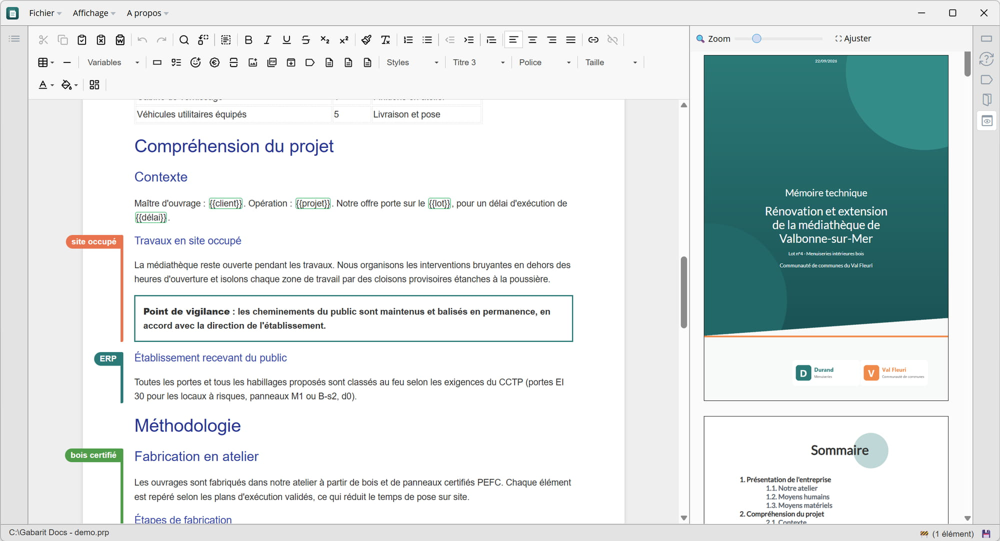

Logiciel de rédaction
Vos documents techniques, en toute simplicité.
Offres, mémoires, rapports : vous rédigez dans un logiciel simple et souple, et vous voyez le document final se mettre en page pendant que vous écrivez. Chaque nouveau dossier part de votre document de référence et s'adapte en quelques clics. Vous restez autonome : vos documents sur vos postes, votre charte, votre rythme, sans abonnement et sans connexion.
- En direct le rendu pendant la frappe
- Sans abonnement la licence est à vous
- Sans connexion tout reste chez vous

1.2 Moyens matériels
{{nom_du_chantier}}
TODO : joindre le planning
Le temps passé à remettre en forme ne remporte aucun dossier
Un dossier commence presque toujours par une copie du précédent : on supprime les chapitres hors sujet, on corrige le nom du client à vingt endroits, et on se bat avec la mise en page la veille de la date limite. GabaritDoc prend en charge cette part répétitive. Vous gardez votre temps et votre énergie pour ce qui fait la différence : ce que vous avez à dire à ce client-là.
Principe
Trois étapes, et le dossier est prêt
-
1
Vous préparez votre document de référence
Une fois pour toutes, vous marquez d'une couleur les passages qui ne servent pas à chaque fois : « Site occupé », « Désamiantage », « Marché public »… Le texte commun reste tel quel.
-
2
Vous répondez à quelques questions
Pour un nouveau dossier : « Le bâtiment reste-t-il occupé ? » Vous cochez, et le document se recompose sous vos yeux. Les passages hors sujet disparaissent, sans jamais être perdus.
-
3
Vous relisez et vous exportez
Le nom du client, les dates et les montants se renseignent une seule fois et se placent partout. Le PDF sort aux couleurs de votre entreprise, exactement comme à l'écran.
Fonctionnalités
Tout ce qu'il faut pour rédiger, dans un seul logiciel
Rédaction
-
Éditeur de texte riche
Titres sur cinq niveaux, listes, tableaux, styles de paragraphe et recherche dans le document.
-
Images et PDF intégrés
Collage direct d'images depuis le presse-papiers. Un PDF (certificat, plaquette, planning) s'insère page par page.
-
Plan du document
Arborescence numérotée des titres, avec recherche. Un clic amène au passage voulu dans l'éditeur.
-
Correcteur orthographique intégré
Dictionnaire français fourni avec le logiciel. Votre texte est vérifié sur votre poste, et n'est envoyé à personne.
-
Marqueurs « à faire »
Points à compléter signalés dans le texte, avec un raccourci pour passer de l'un à l'autre avant l'envoi.
-
Archivage de passages
Un paragraphe mis de côté est archivé plutôt que supprimé. Il sort de l'export et peut être restauré.
Adaptation à chaque dossier
-
Labels
Étiquettes colorées posées sur les sections. Une barre de couleur signale les passages conditionnels dans l'éditeur.
-
Questions
Questionnaire qui affiche ou masque les sections selon leurs labels. Une question peut piloter plusieurs labels.
-
Variables typées
Texte, nombre, date ou fichier, à définir une seule fois et reprises partout dans le document.
-
Nouveau à partir d'un existant
Un nouveau dossier démarre à partir d'un mémoire précédent : contenu, labels, questions et charte sont repris.
-
Consultation d'un autre document
Un second document s'affiche dans le volet latéral, ce qui permet d'y reprendre un passage sans quitter le dossier en cours.
Le résultat sous les yeux
-
Le document final, en direct
Vos pages A4 s'affichent à côté du texte pendant que vous écrivez. Un clic sur l'aperçu vous ramène au bon paragraphe. Plus de surprise au moment d'imprimer.
-
Page de garde, sommaire, contact
Blocs prêts à l'emploi. Le sommaire est numéroté et généré automatiquement à partir des titres.
-
Votre charte, appliquée partout
Couleurs, polices et fonds de page se règlent une fois et habillent tout le document. Vos dossiers se ressemblent, quel que soit le rédacteur.
-
Export PDF
PDF prêt à déposer, fidèle à l'aperçu, avec gestion des sauts de page et des images de grande taille.
-
Export DOCX
Version Word pour les acheteurs qui l'exigent ou pour une relecture externe.
Sérénité au quotidien
-
Enregistrement automatique
Chaque modification est enregistrée quelques secondes après la frappe, sans bouton « Enregistrer ».
-
Historique des versions
Chaque version est datée et associée à son contributeur. Une version antérieure se restaure en un clic.
-
Un fichier autonome
Texte, images, variables, labels, questions, charte et historique sont réunis dans un seul fichier, facile à archiver ou à transmettre.
-
Fichiers joints
Images, polices et pièces utilisées par le document y sont stockées. Rien ne dépend d'un lien réseau.
Autonomie
Vous restez maître de vos documents
Vos dossiers contiennent vos prix, vos méthodes et vos références. GabaritDoc s'installe sur vos postes, comme un traitement de texte : vos documents sont des fichiers chez vous, que personne d'autre ne peut consulter, déplacer ni vous facturer au mois.
Rien ne sort de chez vous
Pas de compte à créer, pas d'envoi discret vers un serveur. Vos sauvegardes et vos droits d'accès habituels suffisent.
Disponible partout
Sur un chantier, dans le train ou pendant une panne de réseau, vous continuez à travailler. Aucune maintenance d'un prestataire ne peut retarder votre dépôt.
Réactif
Tout tourne sur votre machine : l'écriture, l'aperçu et l'export répondent immédiatement.
Sans dépendance
Une licence, pas un abonnement par personne. Même si vous arrêtez un jour, vos documents restent ouvrables et exportables.
Comparaison
Et par rapport à une plateforme en ligne ?
Les plateformes en ligne sont faites pour de grandes équipes commerciales qui écrivent à plusieurs sur le même document, moyennant un abonnement par personne et un projet de déploiement. GabaritDoc vise le même résultat pour des équipes plus réduites, qui préfèrent l'autonomie.
| Critère | GabaritDoc | Plateforme SaaS type |
|---|---|---|
| Hébergement des données | Sur vos postes | Serveurs de l'éditeur |
| Travail sans connexion | Oui, intégralement | Non ou partiellement |
| Modèle de prix | Licence sur devis | Abonnement par utilisateur |
| Contenu conditionnel (questions, labels) | Oui | Oui |
| Charte graphique et export PDF | Oui | Oui |
| Co-édition en temps réel | Non | Oui |
| Bibliothèque de contenu partagée | Par fichiers de référence | Oui, centralisée |
| Mise en service | Un installateur | Projet de déploiement |
Forces et limites
Ce que GabaritDoc fait bien, et ce qu'il ne fait pas
Autant le dire franchement, pour que vous sachiez tout de suite si l'outil est fait pour vous.
Forces
- Données maîtrisées. Aucun contenu ne sort de l'entreprise.
- Adaptation rapide. Un document de référence se décline pour un nouveau dossier en quelques minutes.
- Rendu soigné. Charte graphique, page de garde et sommaire automatique, avec un PDF qui correspond à l'aperçu.
- Simple à prendre en main. Une seule fenêtre, le texte à gauche, le résultat à droite. Pas de modèles à bricoler ni de styles à dompter.
- Historique complet. On sait qui a modifié quoi et quand, et l'on peut revenir en arrière.
- Déploiement simple. Un installateur Windows, sans serveur à administrer.
- Portabilité. Un document tient dans un seul fichier.
Limites
- Pas de co-édition simultanée. Un seul rédacteur modifie un document à la fois. L'historique indique qui a fait quoi.
- Pas de bibliothèque de contenu centralisée : les contenus se partagent par documents de référence.
- Pas de connecteurs vers un CRM ou une plateforme de dématérialisation.
Acquisition
Une licence à vous, pas un abonnement
- Licence d'utilisation perpétuelle de la version acquise
- Nombre de postes défini selon votre organisation
- Installation et prise en main accompagnées
- Paramétrage de votre charte graphique à la demande
Tarif sur devis
selon le nombre de postes et l'accompagnement souhaité
Parlons ensemble de votre projetQuestions fréquentes
FAQ
Faut-il une connexion internet ?
Non. Il n'en faut ni pour l'installation une fois l'installateur récupéré, ni pour la rédaction, ni pour l'export.
Où sont stockés les documents ?
Là où vous les enregistrez : sur le poste, sur un partage réseau ou sur un support de sauvegarde. Chaque document est un fichier unique qui contient tout ce qui lui est nécessaire.
Peut-on reprendre nos mémoires existants ?
Oui. Le contenu se colle directement dans l'éditeur (texte, tableaux, images) depuis Word ou d'autres traitements de texte, et les annexes PDF s'insèrent page par page. La mise en forme de la charte s'applique ensuite automatiquement.
Plusieurs personnes peuvent-elles travailler sur un même mémoire ?
Oui, mais chacune à son tour : l'application ne propose pas de co-édition simultanée. Chaque version enregistrée garde le nom de son auteur et la date, et l'on peut revenir à une version précédente.
Nos acheteurs demandent un fichier Word, est-ce possible ?
Oui, l'export DOCX est intégré. Pour un dépôt, nous recommandons le PDF, dont le rendu est le plus fidèle.
Quels systèmes sont pris en charge ?
Windows 10 et 11.
Contact
Parlons de votre projet
Dites-nous en deux lignes comment vous travaillez aujourd'hui : combien de personnes rédigent, combien de dossiers par an, quelles contraintes de mise en page. Nous vous répondons avec une proposition et, si vous le voulez, une démonstration sur l'un de vos propres documents.
- Démonstration à distance ou dans vos locaux
- Devis adapté au nombre de postes
- Réponse sous deux jours ouvrés
Ou écrivez-nous directement : votre ckontkact example com